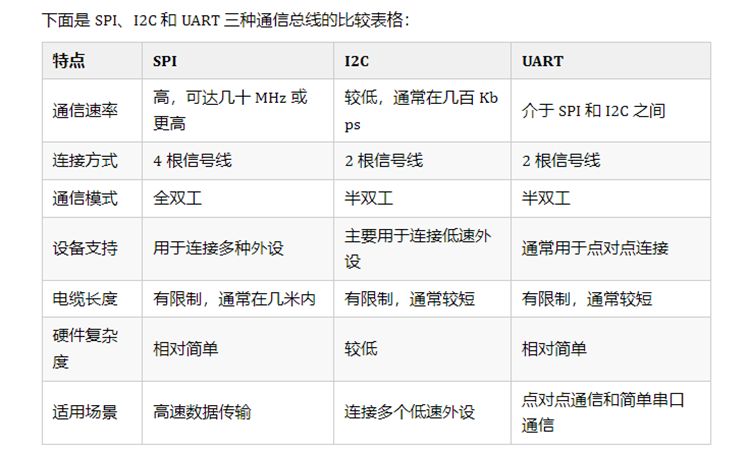

SPI深入剖析
-
SPI是同步通信协议
-
SPI接口有4条数据线：SCK SS MOSI MISO
SPI 通信流程
主设备选通一个或多个从设备，将 SS 线拉低，以确定通信目标。
主设备通过 SCLK 线产生时钟信号，驱动数据在 MOSI 上发送给从设备。
从设备根据时钟信号，在 MISO 上将响应数据返回给主设备。
通信完成后，主设备将 SS 线拉高，释放从设备。
时钟极性（CPOL）与时钟相位（CPHA）
SPI通信可以配置为不同的时钟极性和相位。
时钟极性定义时钟在空闲状态时的电平
- 如果CPOL= 0，串行同步时钟的空闲状态为低电平；
- 如果CPOL= 1，串行同步时钟的空闲状态为高电平。
时钟相位定义数据采样的时机
-
如果CPHA= 0，在串行同步时钟的第一个跳变沿（上升或下降）数据被采样；
-
如果CPHA = 1，在串行同步时钟的第二个跳变沿（上升或下降）数据被采样。
